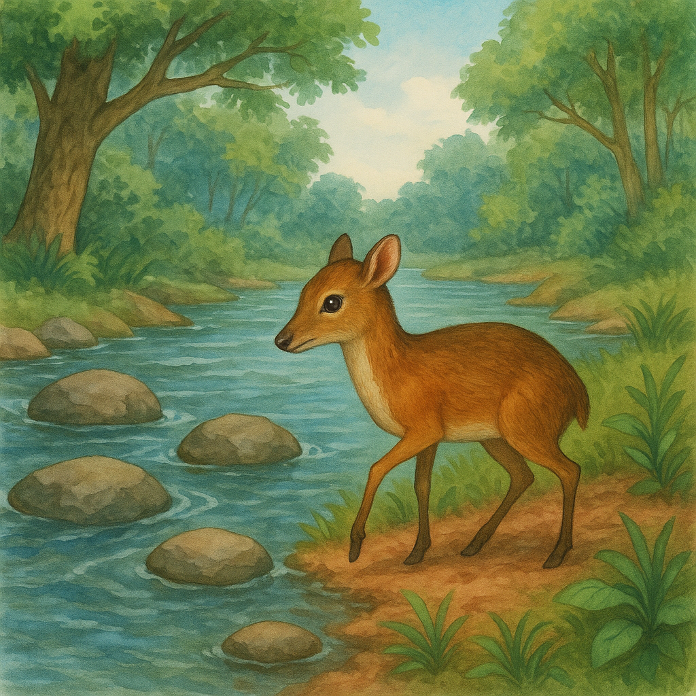
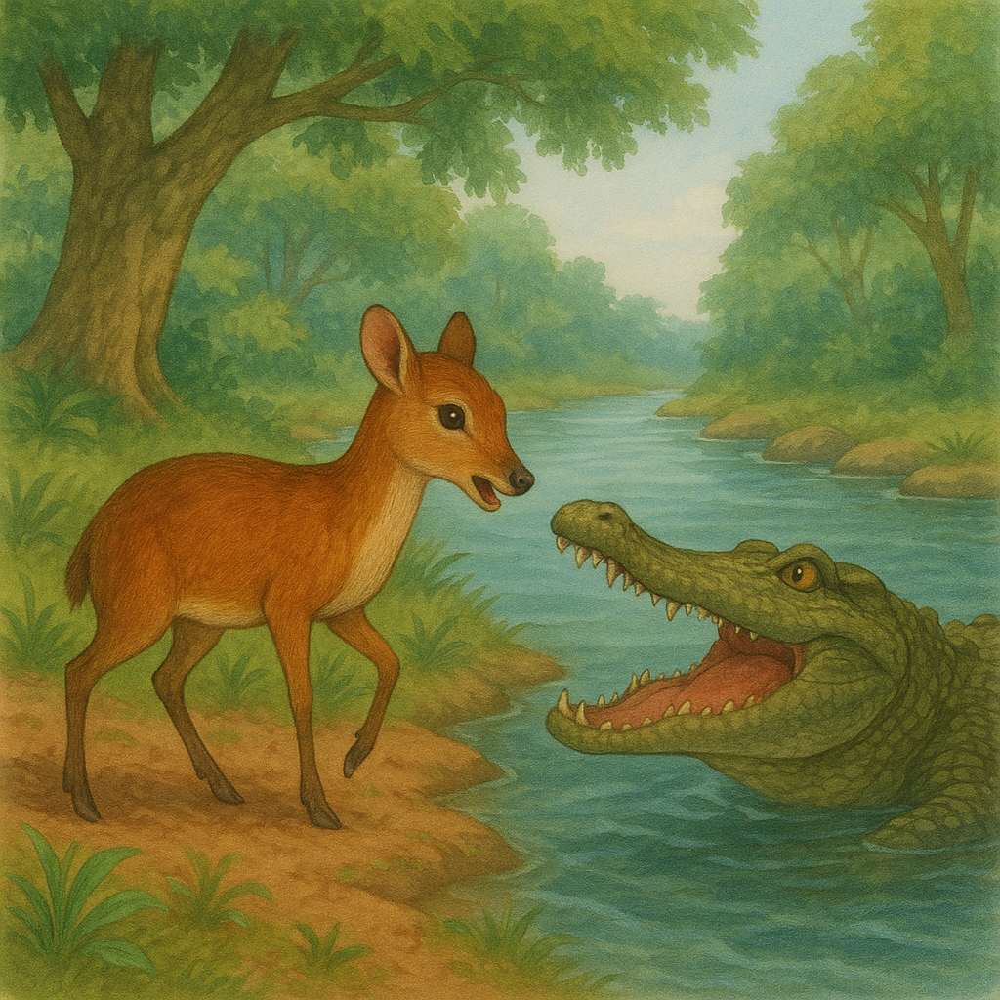
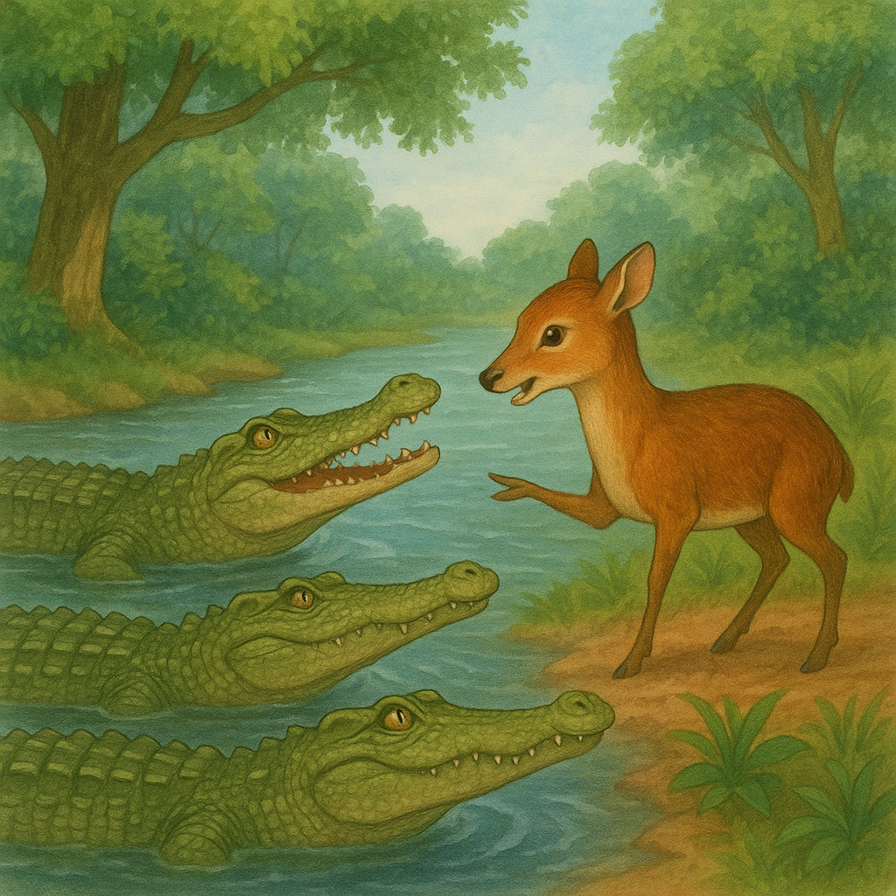

Di suatu hutan yang lebat dan rimbun, hiduplah seekor kancil yang terkenal sangat cerdik. Kancil ini selalu berhasil lolos dari bahaya berkat akalnya yang pintar, dan ia juga suka membantu teman-temannya di hutan.
Suatu pagi yang cerah, perut kancil terasa sangat lapar. Ia melihat ada banyak buah-buahan segar di seberang sungai, namun sungai itu sangat lebar dan dihuni oleh banyak buaya yang ganas. Kancil berpikir keras bagaimana caranya menyeberang tanpa dimakan buaya.
Kancil bingung melihat sungai yang penuh buaya.
Tiba-tiba, kancil mendapat ide cemerlang. Ia menghampiri buaya yang sedang berjemur di tepi sungai. "Hai Buaya Raja!" sapa kancil dengan suara lantang. Buaya-buaya itu terkejut dan menghampiri kancil.
"Ada apa, Kancil? Kau datang kemari hanya untuk menjadi sarapan kami?" tanya seekor buaya besar.
Kancil tersenyum tipis. "Oh, tidak! Aku datang membawa perintah dari Raja Hutan. Raja ingin menghitung jumlah buaya di sungai ini untuk sebuah pesta besar. Kalian semua akan mendapat hadiah makanan enak!"
Kancil membujuk para buaya dengan cerdik.
Para buaya langsung senang mendengar kabar itu. "Benarkah? Wah, kami pasti akan ikut!" seru mereka bersemangat.
"Bagus!" kata kancil. "Sekarang, berbarislah kalian semua dari tepi sungai ini sampai ke seberang. Aku akan menghitung kalian satu per satu."
Tanpa curiga, para buaya segera berbaris rapi dari tepi ke tepi sungai, membentuk jembatan alami.
Para buaya berbaris rapi membentuk jembatan.
Dengan gembira, kancil melompat ke punggung buaya pertama sambil berteriak, "Satu!" Lalu ia melompat lagi ke buaya kedua, "Dua!", dan seterusnya, sambil terus melompat dari satu punggung buaya ke punggung buaya lainnya hingga akhirnya tiba di seberang sungai.
Setibanya di seberang, kancil tertawa riang. "Terima kasih, para buaya! Sekarang aku sudah sampai. Aku tidak perlu menghitung kalian lagi! Selamat tinggal!"
Para buaya pun terkejut dan marah besar karena merasa ditipu. Namun, kancil sudah berlari jauh ke dalam hutan, menikmati buah-buahan segar di sana. Kancil pun berhasil menyeberang sungai dengan selamat berkat kecerdikannya.
Pesan moral: Gunakan akalmu untuk memecahkan masalah dengan bijak.